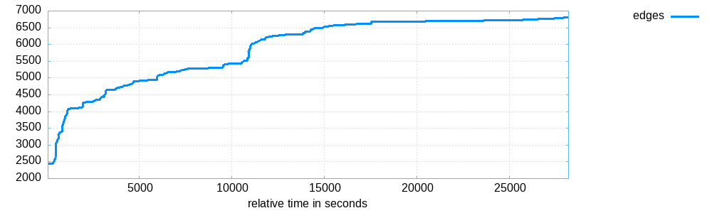
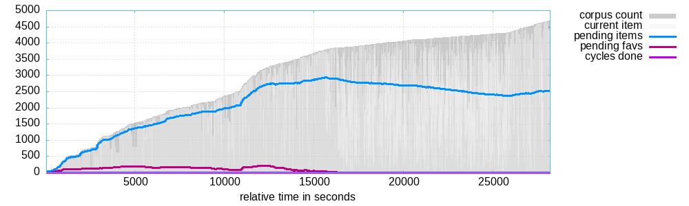
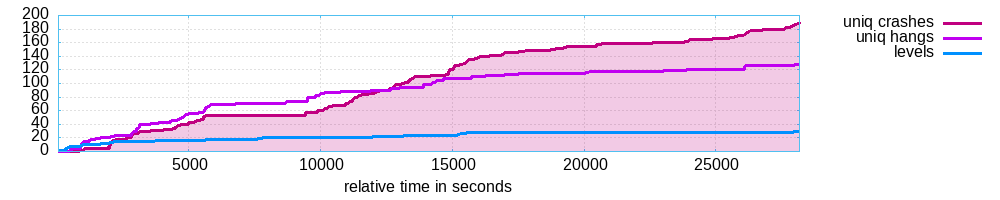
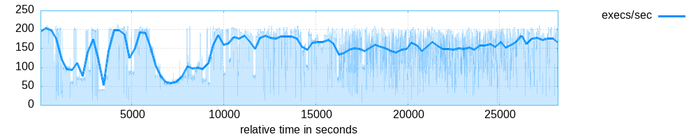

<table style="font-family: 'Trebuchet MS', 'Tahoma', 'Arial', 'Helvetica'">
<tr><td style="width: 18ex"><b>Banner:</b></td><td>ImageMagick-6.7.7-10/utilities/identify</td></tr>
<tr><td><b>Directory:</b></td><td>/home/alex/uni/ssa/proj2/afl-tests/png-out/default</td></tr>
<tr><td><b>Generated on:</b></td><td>Tue May 20 11:14:35 AM CEST 2025</td></tr>
</table>
<p>

<p>
<p>


